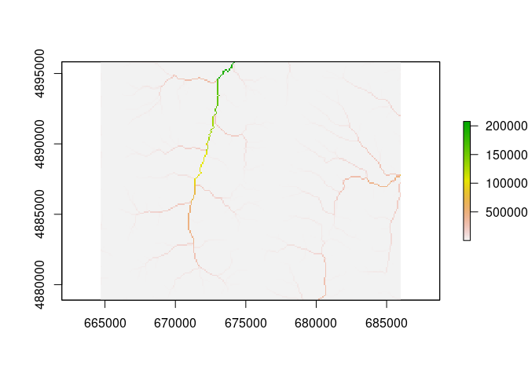

WhiteboxTools R Frontend.
This repository is related to the whitebox R package for geospatial analysis, which is an R frontend of a stand-alone executable command-line program called WhiteboxTools.
- Authors: Dr. John Lindsay (https://jblindsay.github.io/ghrg/index.html)
- Contributors:
- Dr. Qiusheng Wu (https://wetlands.io | https://blog.gishub.org)
- Andrew G. Brown (http://humus.rocks)
- GitHub repo: https://github.com/giswqs/whiteboxR
- CRAN link: https://cran.r-project.org/package=whitebox
- WhiteboxTools: https://github.com/jblindsay/whitebox-tools
- User Manual: https://jblindsay.github.io/wbt_book/
- Free software: MIT license
Contents
Description
The whitebox R package is built on WhiteboxTools, an advanced geospatial data analysis platform developed by Prof. John Lindsay (webpage; jblindsay) at the University of Guelph’s Geomorphometry and Hydrogeomatics Research Group. WhiteboxTools can be used to perform common geographical information systems (GIS) analysis operations, such as cost-distance analysis, distance buffering, and raster reclassification. Remote sensing and image processing tasks include image enhancement (e.g. panchromatic sharpening, contrast adjustments), image mosaicing, numerous filtering operations, simple classification (k-means), and common image transformations. WhiteboxTools also contains advanced tooling for spatial hydrological analysis (e.g. flow-accumulation, watershed delineation, stream network analysis, sink removal), terrain analysis (e.g. common terrain indices such as slope, curvatures, wetness index, hillshading; hypsometric analysis; multi-scale topographic position analysis), and LiDAR data processing. LiDAR point clouds can be interrogated (LidarInfo, LidarHistogram), segmented, tiled and joined, analyzed for outliers, interpolated to rasters (DEMs, intensity images), and ground-points can be classified or filtered. WhiteboxTools is not a cartographic or spatial data visualization package; instead it is meant to serve as an analytical backend for other data visualization software, mainly GIS. Suggested citation: Lindsay, J. B. (2016). Whitebox GAT: A case study in geomorphometric analysis. Computers & Geosciences, 95, 75-84. doi: http://dx.doi.org/10.1016/j.cageo.2016.07.003
Installation
There are three ways to install the whitebox R package.
2. R-Forge
whitebox is also available on R-Forge, so you can install it with:
install.packages("whitebox", repos="http://R-Forge.R-project.org")3. GitHub
You can alternatively install the development version of whitebox from GitHub as follows:
if (!require("remotes")) install.packages('remotes')
remotes::install_github("giswqs/whiteboxR", build = FALSE)Usage
The function wbt_init() checks the path to the
WhiteboxTools binary.
wbt_init()It (invisibly) returns a logical (TRUE/FALSE) value reflecting
whether a file is found at one of the default paths, including those
specified by package options. See ?whitebox::whitebox.
If you have WhiteboxTools installed already but in a non-standard
location run wbt_init(exe_path=...) to set up your options
for your current R session.
wbt_init(exe_path = 'C:/home/user/path/to/whitebox_tools.exe')Additional arguments to wbt_init() can set other package
options, such as whether tools print their standard console output with
cat().
If you want to turn this off, set verbose = FALSE, for
instance:
wbt_init(exe_path = 'C:/home/user/path/to/whitebox_tools.exe', verbose = FALSE)Documentation
For whitebox package documentation in R, ask for help:
??whiteboxFor list of functions, try the wbt_ prefix in your
search:
??wbt_A complete list of functions available in the whitebox R package can be found HERE.
Check out this demo for examples.
Installing WhiteboxTools
The quickest way to get started if you are on 64-bit Windows, Linux
or MacOS architectures is to download and install the WhiteboxTools
binary. A method install_whitebox() is provided to download
a version of the binaries that corresponds to the wrapper functions
available in the package.
whitebox::install_whitebox()By default this will install to your whitebox R package installation directory (e.g. in your R package library), subdirectory “WBT”.
whitebox
How do I run tools?
Tool names in the whitebox R package can be called by corresponding
function using wbt_snake_case() naming convention
(e.g. wbt_lidar_info() R function for
"LidarInfo" WhiteboxTools tool name).
First we load the library and perform any necessary setup.
library(whitebox)
# set up as needed
wbt_init()Many WhiteboxTools will take GeoTIFF files as input. There is a sample Digital Elevation Model (DEM) included in the whitebox package. You can get path as follows for this demo:
# Set input raster DEM file
dem <- system.file("extdata", "DEM.tif", package = "whitebox")We will use this DEM in and perform a sequence of processing routines.
Applies feature-preserving smoothing (FeaturePreservingSmoothing)
Breaches depressions in a DEM (BreachDepressions)
Calculates D-Infinity flow accumulation (DInfFlowAccumulation)
Run tools passing file paths for input and output grids.
In this case we will deal with GeoTIFF input, but WhiteboxTools supports several grid input formats.
The filter argument sets the size of the filter
kernel.
## 1. FeaturePreservingSmoothing
wbt_feature_preserving_smoothing(
dem = dem,
output = "./smoothed.tif",
filter = 9
)
## 2. BreachDepressions
wbt_breach_depressions(dem = "./smoothed.tif", output = "./breached.tif")
## 3. DInfFlowAccumulation
wbt_d_inf_flow_accumulation(input = dem, output = "./flow_accum.tif")
if (requireNamespace('raster')) {
raster::plot(raster::raster("./flow_accum.tif"))
}
#> Loading required namespace: raster
About WhiteboxTools
library(whitebox)
# cat() output in non-interactive mode
wbt_verbose(TRUE)
# Prints the whitebox-tools help...a listing of available commands
wbt_help()
#> WhiteboxTools Help
#>
#> The following commands are recognized:
#> --cd, --wd Changes the working directory; used in conjunction with --run flag.
#> -h, --help Prints help information.
#> -l, --license Prints the whitebox-tools license. Tool names may also be used, --license="Slope"
#> --listtools Lists all available tools. Keywords may also be used, --listtools slope.
#> -r, --run Runs a tool; used in conjunction with --wd flag; -r="LidarInfo".
#> --toolbox Prints the toolbox associated with a tool; --toolbox=Slope.
#> --toolhelp Prints the help associated with a tool; --toolhelp="LidarInfo".
#> --toolparameters Prints the parameters (in json form) for a specific tool; --toolparameters="LidarInfo".
#> -v Verbose mode. Without this flag, tool outputs will not be printed.
#> --viewcode Opens the source code of a tool in a web browser; --viewcode="LidarInfo".
#> --version Prints the version information.
#>
#> Example Usage:
#> >> ./whitebox_tools -r=lidar_info --cd="/path/to/data/" -i=input.las --vlr --geokeys
# Prints the whitebox-tools license
wbt_license()
#> WhiteboxTools License
#> Copyright 2017-2021 John Lindsay
#>
#> Permission is hereby granted, free of charge, to any person obtaining a copy of this software and
#> associated documentation files (the "Software"), to deal in the Software without restriction,
#> including without limitation the rights to use, copy, modify, merge, publish, distribute, sublicense,
#> and/or sell copies of the Software, and to permit persons to whom the Software is furnished to do so,
#> subject to the following conditions:
#>
#> The above copyright notice and this permission notice shall be included in all copies or substantial
#> portions of the Software.
#>
#> THE SOFTWARE IS PROVIDED "AS IS", WITHOUT WARRANTY OF ANY KIND, EXPRESS OR IMPLIED, INCLUDING BUT
#> NOT LIMITED TO THE WARRANTIES OF MERCHANTABILITY, FITNESS FOR A PARTICULAR PURPOSE AND
#> NONINFRINGEMENT. IN NO EVENT SHALL THE AUTHORS OR COPYRIGHT HOLDERS BE LIABLE FOR ANY CLAIM, DAMAGES
#> OR OTHER LIABILITY, WHETHER IN AN ACTION OF CONTRACT, TORT OR OTHERWISE, ARISING FROM, OUT OF OR IN
#> CONNECTION WITH THE SOFTWARE OR THE USE OR OTHER DEALINGS IN THE SOFTWARE.
# Prints the whitebox-tools version
wbt_version()
#> WhiteboxTools v2.1.0 by Dr. John B. Lindsay (c) 2017-2022
#>
#> WhiteboxTools is an advanced geospatial data analysis platform developed at
#> the University of Guelph's Geomorphometry and Hydrogeomatics Research
#> Group (GHRG). See www.whiteboxgeo.com for more details.
# Prints the toolbox for a specific tool.
wbt_toolbox("AsciiToLas")
#> LiDAR Tools
# Lists tools with 'lidar' in tool name or description.
wbt_list_tools("lidar")
#> All 47 Tools containing keywords:
#> AsciiToLas: Converts one or more ASCII files containing LiDAR points into LAS files.
#> ClassifyBuildingsInLidar: Reclassifies a LiDAR points that lie within vector building footprints.
#> ClassifyOverlapPoints: Classifies or filters LAS points in regions of overlapping flight lines.
#> ClipLidarToPolygon: Clips a LiDAR point cloud to a vector polygon or polygons.
#> ErasePolygonFromLidar: Erases (cuts out) a vector polygon or polygons from a LiDAR point cloud.
#> FilterLidarClasses: Removes points in a LAS file with certain specified class values.
#> FilterLidarScanAngles: Removes points in a LAS file with scan angles greater than a threshold.
#> FindFlightlineEdgePoints: Identifies points along a flightline's edge in a LAS file.
#> FlightlineOverlap: Reads a LiDAR (LAS) point file and outputs a raster containing the number of overlapping flight lines in each grid cell.
#> HeightAboveGround: Normalizes a LiDAR point cloud, providing the height above the nearest ground-classified point.
#> LasToAscii: Converts one or more LAS files into ASCII text files.
#> LasToMultipointShapefile: Converts one or more LAS files into MultipointZ vector Shapefiles. When the input parameter is not specified, the tool grids all LAS files contained within the working directory.
#> LasToShapefile: Converts one or more LAS files into a vector Shapefile of POINT ShapeType.
#> LasToZlidar: Converts one or more LAS files into the zlidar compressed LiDAR data format.
#> LidarBlockMaximum: Creates a block-maximum raster from an input LAS file. When the input/output parameters are not specified, the tool grids all LAS files contained within the working directory.
#> LidarBlockMinimum: Creates a block-minimum raster from an input LAS file. When the input/output parameters are not specified, the tool grids all LAS files contained within the working directory.
#> LidarClassifySubset: Classifies the values in one LiDAR point cloud that correspond with points in a subset cloud.
#> LidarColourize: Adds the red-green-blue colour fields of a LiDAR (LAS) file based on an input image.
#> LidarDigitalSurfaceModel: Creates a top-surface digital surface model (DSM) from a LiDAR point cloud.
#> LidarElevationSlice: Outputs all of the points within a LiDAR (LAS) point file that lie between a specified elevation range.
#> LidarGroundPointFilter: Identifies ground points within LiDAR dataset using a slope-based method.
#> LidarHexBinning: Hex-bins a set of LiDAR points.
#> LidarHillshade: Calculates a hillshade value for points within a LAS file and stores these data in the RGB field.
#> LidarHistogram: Creates a histogram of LiDAR data.
#> LidarIdwInterpolation: Interpolates LAS files using an inverse-distance weighted (IDW) scheme. When the input/output parameters are not specified, the tool interpolates all LAS files contained within the working directory.
#> LidarInfo: Prints information about a LiDAR (LAS) dataset, including header, point return frequency, and classification data and information about the variable length records (VLRs) and geokeys.
#> LidarJoin: Joins multiple LiDAR (LAS) files into a single LAS file.
#> LidarKappaIndex: Performs a kappa index of agreement (KIA) analysis on the classifications of two LAS files.
#> LidarNearestNeighbourGridding: Grids LiDAR files using nearest-neighbour scheme. When the input/output parameters are not specified, the tool grids all LAS files contained within the working directory.
#> LidarPointDensity: Calculates the spatial pattern of point density for a LiDAR data set. When the input/output parameters are not specified, the tool grids all LAS files contained within the working directory.
#> LidarPointStats: Creates several rasters summarizing the distribution of LAS point data. When the input/output parameters are not specified, the tool works on all LAS files contained within the working directory.
#> LidarRansacPlanes: Performs a RANSAC analysis to identify points within a LiDAR point cloud that belong to linear planes.
#> LidarRbfInterpolation: Interpolates LAS files using a radial basis function (RBF) scheme. When the input/output parameters are not specified, the tool interpolates all LAS files contained within the working directory.
#> LidarRemoveDuplicates: Removes duplicate points from a LiDAR data set.
#> LidarRemoveOutliers: Removes outliers (high and low points) in a LiDAR point cloud.
#> LidarRooftopAnalysis: Identifies roof segments in a LiDAR point cloud.
#> LidarSegmentation: Segments a LiDAR point cloud based on differences in the orientation of fitted planar surfaces and point proximity.
#> LidarSegmentationBasedFilter: Identifies ground points within LiDAR point clouds using a segmentation based approach.
#> LidarTINGridding: Creates a raster grid based on a Delaunay triangular irregular network (TIN) fitted to LiDAR points.
#> LidarThin: Thins a LiDAR point cloud, reducing point density.
#> LidarThinHighDensity: Thins points from high density areas within a LiDAR point cloud.
#> LidarTile: Tiles a LiDAR LAS file into multiple LAS files.
#> LidarTileFootprint: Creates a vector polygon of the convex hull of a LiDAR point cloud. When the input/output parameters are not specified, the tool works with all LAS files contained within the working directory.
#> LidarTophatTransform: Performs a white top-hat transform on a Lidar dataset; as an estimate of height above ground, this is useful for modelling the vegetation canopy.
#> NormalVectors: Calculates normal vectors for points within a LAS file and stores these data (XYZ vector components) in the RGB field.
#> SelectTilesByPolygon: Copies LiDAR tiles overlapping with a polygon into an output directory.
#> ZlidarToLas: Converts one or more zlidar files into the LAS data format.
# Prints the help for a specific tool.
wbt_tool_help("lidar_info")
#> LidarInfo
#> Description:
#> Prints information about a LiDAR (LAS) dataset, including header, point return frequency, and classification data and information about the variable length records (VLRs) and geokeys.
#> Toolbox: LiDAR Tools
#> Parameters:
#>
#> Flag Description
#> ----------------- -----------
#> -i, --input Input LiDAR file.
#> -o, --output Output HTML file for summary report.
#> --vlr Flag indicating whether or not to print the variable length records (VLRs).
#> --geokeys Flag indicating whether or not to print the geokeys.
#>
#>
#> Example usage:
#> >>./whitebox_tools -r=LidarInfo -v --wd="/path/to/data/" -i=file.las --vlr --geokeys"
#> ./whitebox_tools -r=LidarInfo --wd="/path/to/data/" -i=file.las
# Retrieves the tool parameter descriptions for a specific tool.
wbt_tool_parameters("slope")
#> {"parameters": [{"name":"Input DEM File","flags":["-i","--dem"],"description":"Input raster DEM file.","parameter_type":{"ExistingFile":"Raster"},"default_value":null,"optional":false},{"name":"Output File","flags":["-o","--output"],"description":"Output raster file.","parameter_type":{"NewFile":"Raster"},"default_value":null,"optional":false},{"name":"Z Conversion Factor","flags":["--zfactor"],"description":"Optional multiplier for when the vertical and horizontal units are not the same.","parameter_type":"Float","default_value":null,"optional":true},{"name":"Units","flags":["--units"],"description":"Units of output raster; options include 'degrees', 'radians', 'percent'","parameter_type":{"OptionList":["degrees","radians","percent"]},"default_value":"degrees","optional":true}]}
# View the source code for a specific tool on the source code repository.
wbt_view_code("breach_depressions")
#> https://github.com/jblindsay/whitebox-tools/blob/master/whitebox-tools-app/src/tools/hydro_analysis/breach_depressions.rsAvailable Tools
The WhiteboxTools library currently contains more than 448 tools, which are each grouped based on their main function into one of the following categories: Data Tools, GIS Analysis, Hydrological Analysis, Image Analysis, LiDAR Analysis, Mathematical and Statistical Analysis, Stream Network Analysis, and Terrain Analysis. For a listing of available tools, complete with documentation and usage details, please see the WhiteboxTools User Manual.
If you are interested in using the WhiteboxTools command-line program, check WhiteboxTools Usage
Contributing
If you would like to contribute to the project as a developer, follow these instructions to get started:
- Fork the whiteboxR repository (https://github.com/giswqs/whiteboxR)
- Create your feature branch (git checkout -b my-new-feature)
- Commit your changes (git commit -am ‘Add some feature’)
- Push to the branch (git push origin my-new-feature)
- Create a new Pull Request
Unless explicitly stated otherwise, any contribution intentionally submitted for inclusion in the work shall be licensed as the MIT license without any additional terms or conditions.
License
The whitebox R package is distributed under the MIT license, a permissive open-source (free software) license.
Reporting Bugs
whitebox is distributed as is and without warranty of suitability for application. If you encounter flaws with the software (i.e. bugs) please report the issue. Providing a detailed description of the conditions under which the bug occurred will help to identify the bug. Use the Issues tracker on GitHub to report issues with the software and to request feature enchancements. Please do not email Dr. Lindsay directly with bugs.